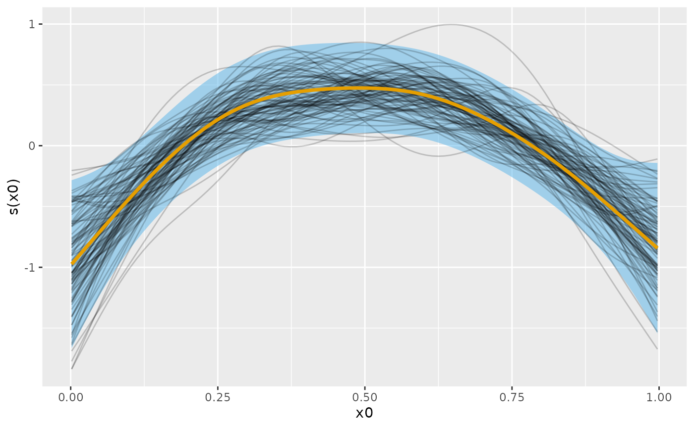
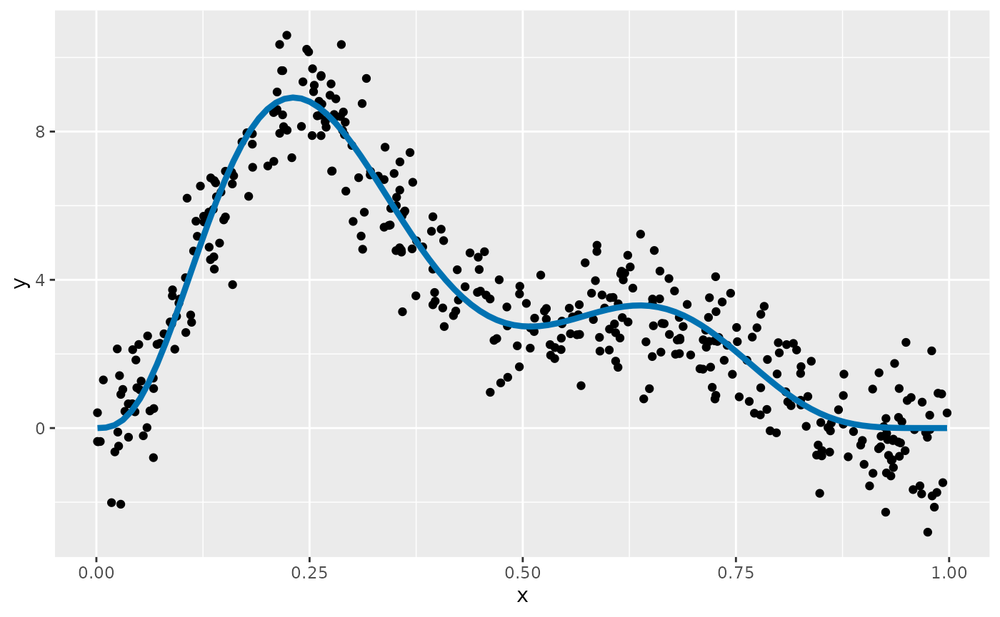
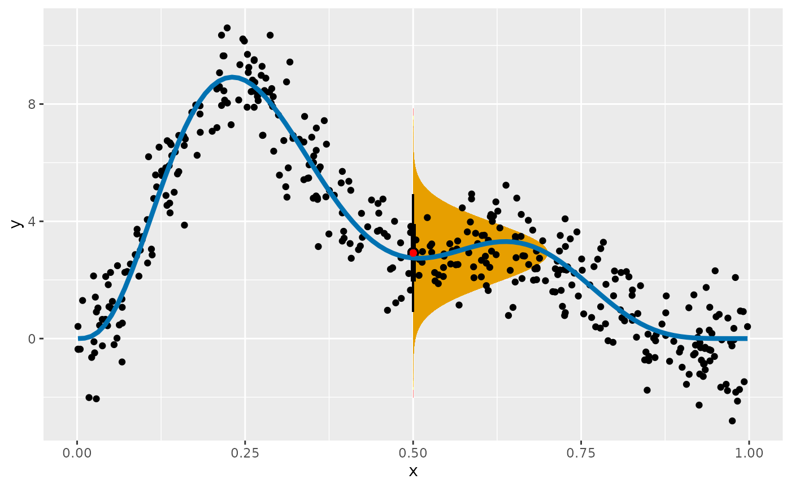
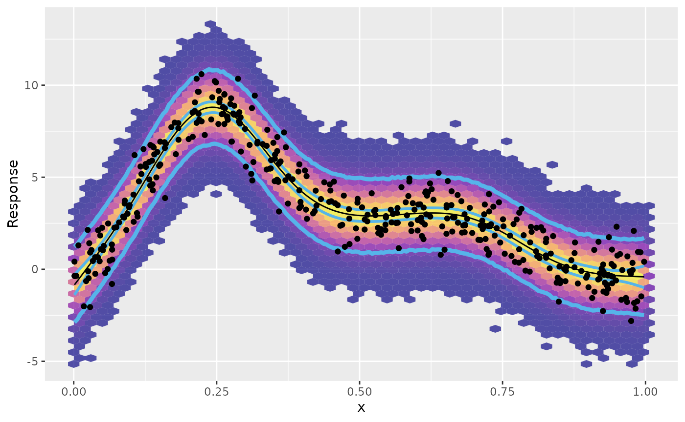

This vignette describes {gratia}’s tools for posterior simulation, a powerful way of doing inference using estimated generalized additive models.
We’ll need the following packages for this vignette:
pkgs <- c("mgcv", "gratia", "dplyr", "tidyr", "ggplot2", "ggdist", "distributional")
vapply(pkgs, library, logical(1L), logical.return = TRUE, character.only = TRUE)
#> Loading required package: nlme
#> This is mgcv 1.9-1. For overview type 'help("mgcv-package")'.
#>
#> Attaching package: 'dplyr'
#> The following object is masked from 'package:nlme':
#>
#> collapse
#> The following objects are masked from 'package:stats':
#>
#> filter, lag
#> The following objects are masked from 'package:base':
#>
#> intersect, setdiff, setequal, union
#> mgcv gratia dplyr tidyr ggplot2
#> TRUE TRUE TRUE TRUE TRUE
#> ggdist distributional
#> TRUE TRUEA generalized additive model (GAM) has the following form
\[ g(\mu_i) = \eta_i = A_i + \mathbf{X}_i \boldsymbol{\gamma} + \sum_{j=1}^{J} f_j(x_{ij}), \; y_i \sim EF(\mu_i, \phi) \]
where \(g()\) is the link function, \(A\) is an offset, \(\mathbf{X}_i\) is the \(i\)th row of a parametric model matrix, \(\boldsymbol{\gamma}\) is a vector of parameters for the parametric terms, \(f_j\) is a smooth function of covariate \(x_j\). \(y_i \sim EF(\mu_i, \phi)\) denotes that the observations \(y_i\) are distributed as some member of the exponential family of distributions with mean \(\mu_i\) and scale parameter \(\phi\).
The smooth functions \(f_j\) are represented in the model via penalised splines basis expansions of the covariates, that are a weighted sum of basis functions
\[ f_j(x_{ij}) = \sum_{k=1}^{K} \beta_{jk} b_{jk}(x_{ij}) \]
where \(\beta_{jk}\) is the weight (coefficient) associated with the \(k\)th basis function \(b_{jk}()\) evaluated at the covariate value \(x_{ij}\) for the \(j\)th smooth function \(f_j\). Wiggliness penalties \(\sum_j \lambda_j \boldsymbol{\beta}^{\mathsf{T}} \mathbf{S}_j \boldsymbol{\beta}\) controls the degree of smoothing applied to the \(f_j\) through the smoothing parameters \(\lambda_j\).
Having fitted the GAM in mgcv using REML or ML smoothness selection we obtain a vector of coefficients \(\hat{\boldsymbol{\beta}}\) (which also includes the coefficients for the parametric terms, , for convenience). The estimates of these coefficients are conditional upon the data and the selected values of the smoothing parameters \(\lambda_j\). Using the Bayesian view of smoothing via REML smoothness selection, \(\boldsymbol{\beta}\) has a multivariate normal posterior distribution \(\boldsymbol{\beta} | \boldsymbol{\eta}, \boldsymbol{\lambda} \sim \text{MVN}(\hat{\boldsymbol{\beta}}, \mathbf{V}_{\text{b}})\), where \(\mathbf{V}_{\text{b}}\) is the Bayesian covariance matrix of the estimated parameters, (the subscript \(\text{b}\) is used to differentiate this Bayesian covariance matrix from the frequentist version which is also available in the mgcv model output).
What are we simulating?
Posterior simulation involves randomly sampling from \(\text{MVN}(\hat{\boldsymbol{\beta}}, \mathbf{V}_{\text{b}})\) or \(EF(\mu_i, \phi)\), or both.
We might simulate from the posterior distribution of a single estimated smooth function to see the uncertainty in the estimate of that function. To do this we simulate for just a subset of \(\beta_{j \cdot}\) associated with the \(f_j\) of interest. Instead, we might be interested in the uncertainty in the expectation (expected value) of the model at some given values of the covariates, in which case we can simulate for all \(\boldsymbol{\beta}\) to sample from the posterior of \(\mathbb{E}(y_i)\), the fitted values of the model. Or we might want to generate new values of response variable via draws from the conditional distribution of the response, by simulating new response data \(\mathbb{y}^{\ast}\), at either the observed \(\mathbf{x}\) or new values $^{}, from \(y^{\ast}_i | \boldsymbol{\eta}, \mathbf{x} \sim EF(\hat{\mu_i}, \phi)\). Finally, we can combine posterior simulation from both distributions to generate posterior draws for new data \(\mathbb{y}^{\ast}\) that also include the uncertainty in the expected values.
gratia has functionality for all these options through the following functions
-
smooth_samples()generates draws from the posterior distribution of single estimated smooth functions, -
fitted_samples()generates draws from the posterior distribution of \(\mathbb{E}(y_i | \mathbf{X}_i = x_i)\), the expected value of the responss, -
predicted_samples(), generates new response data given supplied values of covariates \(y^{\ast}_i | \mathbf{X}_i = x^{\ast}_i\) -
posterior_samples(), generates draws from the posterior distribution of the model, including the uncertainty in the estimated parameters of that model.
In simpler terms, fitted_samples() generates predictions
about the “average” or expected value of the response at values of the
covariates. These predictions only include the uncertainty in the
estimated values of the model coefficients. In contrast,
posterior_samples() generates predictions of the actual
values of the response we might expect to observe (if the model is
correct) given values of the covariates. These predicted values include
the variance of the sampling distribution (error term).
predicted_samples() lies somewhere in between these two;
the predicted values only include the variation in the sampling
distribution, and take the model as fixed, known.
It is worth reminding ourselves that these posterior draws are all
conditional upon the selected values of the smoothing parameter(s) \(\lambda_j\). We act as if the wiggliness of
the estimated smooths was known, when in actual fact we estimated
(selected is perhaps a better description) these wiglinesses from the
data during model fitting. If the estimated GAM has been fitted with
method argument "REML", or "ML",
then a version of \(\mathbf{V}_{\text{b}}\) that is corrected
for having selected smoothing parameters, \(\mathbf{V}_{\text{c}}\), is generally
available. This allows, to an extent, for posterior simulation to
account for the additional source of uncertainty of having chosen then
values of \(\boldsymbol{\lambda}\).
There are two additional functions available in gratia that do posterior simulation:
gratia provides simulate() methods for models estimated
using gam(), bam(), and gamm(),
as well as those fitted via scam() in the scam package.
simulate() is a base R convention that does the same thing
as predicted_samples(), just in a non-tidy way (that is not
pejorative; it returns the simulated response values as a matrix, which
is arguably more useful if you are doing math or further statistical
computation.) derivative_samples() provides draws from the
posterior distribution of the derivative of response variable for a
small change in a focal covariate value.
derivative_samples() is a less general version of
fitted_samples(); you could achieve the same thing by two
separate calls to fitted_samples(). We’ll reserve
discussion of derivative_samples() to a separate vignette
focused on estimating derivatives from GAMs.
In the following sections we’ll look at each of the four main posterior simulation functions in turn.
smooth_samples()
ss_df <- data_sim("eg1", seed = 21)
m_ss <- gam(y ~ s(x0) + s(x1) + s(x2) + s(x3),
data = ss_df, method = "REML")
s_x0 <- get_smooth(m_ss, "s(x0)")
smooth_coef_indices(s_x0)
#> [1] 2 3 4 5 6 7 8 9 10
sm_samp <- smooth_samples(m_ss, term = "s(x0)", n_vals = 100, n = 100)
sm_est <- smooth_estimates(m_ss, smooth = "s(x0)") |>
add_confint()
sm_est |>
ggplot(aes(x = x0)) +
geom_lineribbon(aes(ymin = .lower_ci, ymax = .upper_ci),
orientation = "vertical", fill = "#56B4E9", alpha = 0.5) +
geom_line(data = sm_samp,
aes(y = .value, group = .draw), alpha = 0.2) +
geom_line(aes(y = .estimate), linewidth = 1.25, colour = "#E69F00") +
labs(y = smooth_label(s_x0))
Examples
Prediction intervals
One use for posterior simulation is to generate prediction intervals for a fitted model. Prediction intervals include two sources of uncertainty; that from the estimated model itself, plus the sampling uncertainty or error that arises from drawing observations from the conditional distribution of the response.
For example, in a Gaussian GAM, the first source of uncertainty comes from the uncertainty in the estimates of \(\beta_j\), the model coefficients. This uncertainty is in the mean or expected value of the response. The second source of uncertainty stems from the error term, the estimated variance of the response. These two parameters define the conditional distribution of \(Y_i\). For any value of the covariate(s) \(\mathbf{X}\), our estimated model defines the entire distribution of the response values we might expect to observe at those covariate values.
To illustrate, we’ll fit a simple GAM with a single smooth function
to data simulate from Gu & Wabha’s function \(f_2\) using data_sim(). We
simulate 400 values from a Gaussian distribution with variance \(\sigma^2 = 1\).
df <- data_sim("gwf2", n = 400, scale = 1, dist = "normal", seed = 8)The simulated data, and the true function from which they were generated are shown below
df |>
ggplot(aes(x = x, y = y)) +
geom_point() +
geom_function(fun = gw_f2, colour = "#0072B2", linewidth = 1.5)
A GAM for these data contains a single smooth function of
x
If we consider a new value of the covariate x, \(x^{\ast} = 0.5\), the expected value of the
response given our model, \(\mathbb{E}(y^{*} |
x = x^{*})\), is ~2.92, which we obtain using
predict()
mu <- predict(m, newdata = data.frame(x = 0.5))
mu
#> 1
#> 2.919094This value is the mean of a Gaussian distribution that, if
our model is a correct description of the data, describes the
distribution of the values that \(Y\)
might take when \(x = 0.5\). The
Gaussian distribution is defined by two parameters; the mean, \(\mu\), which describes the middle of the
distribution, and the variance, \(\sigma^2\), which describes how spread out
the distribution is about the mean. To fully describe the Gaussian
distribution of the response when \(x =
0.5\), we need an estimate of the variance. We didn’t model this
explicitly in the our GAM, but we get an estimate any from the model’s
scale parameter, \(\phi\). This is
stored as the element scale in the model object
sigma <- m$scale
sigma
#> [1] 1.019426We can visualise what this distribution looks like with some magic from the ggdist package
df |>
ggplot(aes(x = x, y = y)) +
stat_halfeye(aes(ydist = dist_normal(mean = mu, sd = sigma)),
x = 0.5, scale = 0.2, slab_fill = "#E69F00", slab_alpha = 0.7) +
geom_point() +
geom_function(fun = gw_f2, colour = "#0072B2", linewidth = 1.5) +
geom_point(x = 0.5, y = mu, colour = "red")
The orange region shows the expected density of response values at
\(x^{\ast} = 0.5\) that our model
predicts we could expect to observe. This region assumes there is no
uncertainty in the estimate of the mean of variance. Prediction
intervals take into account the variation about the expected value, plus
the uncertainty in the expected value. fitted_values()
conveniently returns this uncertainty for us, which by default is a 95%
credible interval
fitted_values(m, data = data.frame(x = 0.5))
#> # A tibble: 1 × 6
#> .row x .fitted .se .lower_ci .upper_ci
#> <int> <dbl> <dbl> <dbl> <dbl> <dbl>
#> 1 1 0.5 2.92 0.161 2.60 3.23The .se column is the standard error (standard
deviation) of the estimated value (.fitted), while
.lower_ci and .upper_ci are lower and upper
uncertainty bounds (at the 95% level) on the estimated value
respectively. With GAMs fitted through mgcv we don’t have a
corresponding estimate of the uncertainty in the scale parameter, \(\phi\), which for this model is the
estimated standard deviation \(\hat{\sigma}\).
While it would be pretty easy to compute upper and lower tail
quantiles of the fitted Gaussian distribution for a range of values of
x to get a prediction interval, we’d be ignoring the
uncertainty in the model estimates of the mean. Posterior simulation
provides a simple and convenient way to generate a prediction interval
that includes the model uncertainty, and which works in principle for
any of the families available in mgcv (although in practice, not all
families are currently supported by gratia).
To compute a prediction interval over x for our GAM, we
being by creating a set of data evenly over the range of x
observed in the data used to fit the model
ds <- data_slice(m, x = evenly(x, n = 200)) |>
mutate(.row = row_number())The added variable .row will be used later to match
posterior simulated values to the row in the prediction data set
ds. We also compute the fitted values for these new
observations using fitted_values().
fv <- fitted_values(m, data = ds)That step isn’t required in order to do posterior simulation with gratia, but we’ll use the fitted values later to show the model estimated values and their uncertainty in contrast to the prediction interval.
We use posterior_samples() to generate new response data
for each of the new x values in ds and use a
join to add the prediction data to each draw
ps <- posterior_samples(m, n = 10000, data = ds, seed = 24,
unconditional = TRUE) |>
left_join(ds, by = join_by(.row == .row))
ps
#> # A tibble: 2,000,000 × 4
#> .row .draw .response x
#> <int> <int> <dbl> <dbl>
#> 1 1 1 -1.34 0.00129
#> 2 2 1 -0.0495 0.00629
#> 3 3 1 0.0308 0.0113
#> 4 4 1 -0.783 0.0163
#> 5 5 1 0.861 0.0213
#> 6 6 1 0.475 0.0263
#> 7 7 1 0.858 0.0313
#> 8 8 1 0.143 0.0363
#> 9 9 1 -0.0344 0.0413
#> 10 10 1 1.04 0.0463
#> # ℹ 1,999,990 more rowsHere we asked for 10000 posterior draws for each new value of
x. Ideally we’d generate at least three or four times this
many draws to get a more precise estimate of the prediction interval,
but we keep the number low in this vignette to avoid excessive
computation time. We’re also using the smoothness parameter selection
corrected version of the Bayesian covariance matrix; this matrix has
been adjusted to account for us not knowing the value of the smoothing
parameter for \(f(x_i)\).
ps is a tibble, with n * nrow(ds) rows. The
.draw variable groups the simulated values by posterior
draw, while .row groups posterior draws for the same value
of x. To summarise the posterior draws using {dplyr} we
need a function that will compute quantiles of the posterior
distribution for each value of x (each .row).
The following function is a simple wrapper around the
quantile() function from base R, which arranges the output
from quantile() as a data frame.
quantile_fun <- function(x, probs = c(0.025, 0.5, 0.975), ...) {
tibble::tibble(.value = quantile(x, probs = probs, ...),
.q = probs * 100)
}We apply this function to our set of posterior draws, grouping by
.row to summarise separately the posterior distribution for
each new value of x. reframe() is used to
summarise the posterior using our quantile_fun() function.
For ease of use, we pivot the resulting summary from long to wide format
and add on the covariate values by joining on the .row
variable
p_int <- ps |>
group_by(.row) |>
reframe(quantile_fun(.response)) |>
pivot_wider(id_cols = .row, names_from = .q, values_from = .value,
names_prefix = ".q") |>
left_join(ds, by = join_by(.row == .row))
p_int
#> # A tibble: 200 × 5
#> .row .q2.5 .q50 .q97.5 x
#> <int> <dbl> <dbl> <dbl> <dbl>
#> 1 1 -2.84 -0.847 1.25 0.00129
#> 2 2 -2.70 -0.651 1.41 0.00629
#> 3 3 -2.50 -0.434 1.62 0.0113
#> 4 4 -2.24 -0.207 1.83 0.0163
#> 5 5 -2.04 -0.0197 2.01 0.0213
#> 6 6 -1.81 0.191 2.25 0.0263
#> 7 7 -1.59 0.391 2.41 0.0313
#> 8 8 -1.38 0.594 2.60 0.0363
#> 9 9 -1.20 0.831 2.84 0.0413
#> 10 10 -0.935 1.06 3.04 0.0463
#> # ℹ 190 more rowsThe 95% prediction interval is shown for the first 10 rows of the
prediction data. the column labelled .q50 is the median of
the posterior distribution.
We can now use the various objects we have produced to plot the
fitted values from the model (and their uncertainties), as well as the
prediction intervals we just generated. We add the observed data used to
fit the model as black points, and summarise the posterior samples (from
ps) using a hexagonal binning (to avoid plotting all 2
million posterior samples)
fv |>
ggplot(aes(x = x, y = .fitted)) +
# summarise the posterior samples
geom_hex(data = ps, aes(x = x, y = .response, fill = after_stat(count)),
bins = 50, alpha = 0.7) +
# add the lower and upper prediction intervals
geom_line(data = p_int, aes(y = .q2.5), colour = "#56B4E9", linewidth = 1.5) +
geom_line(data = p_int, aes(y = .q97.5), colour = "#56B4E9", linewidth = 1.5) +
# add the lower and upper credible intervals
geom_line(aes(y = .lower_ci), colour = "#56B4E9", linewidth = 1) +
geom_line(aes(y = .upper_ci), colour = "#56B4E9", linewidth = 1) +
# add the fitted model
geom_line() +
# add the observed data
geom_point(data = df, aes(x = x, y = y)) +
scale_fill_viridis_c(option = "plasma") +
theme(legend.position = "none") +
labs(y = "Response")
The outermost pair of blue lines on the plot above is the prediction interval we created. This interval encloses, as expected, almost all of the observe data points. It also encloses, by design, most of the posterior samples, as indicated by the filled hexagonal bins, with warmer colours indicating larger counts of posterior draws.